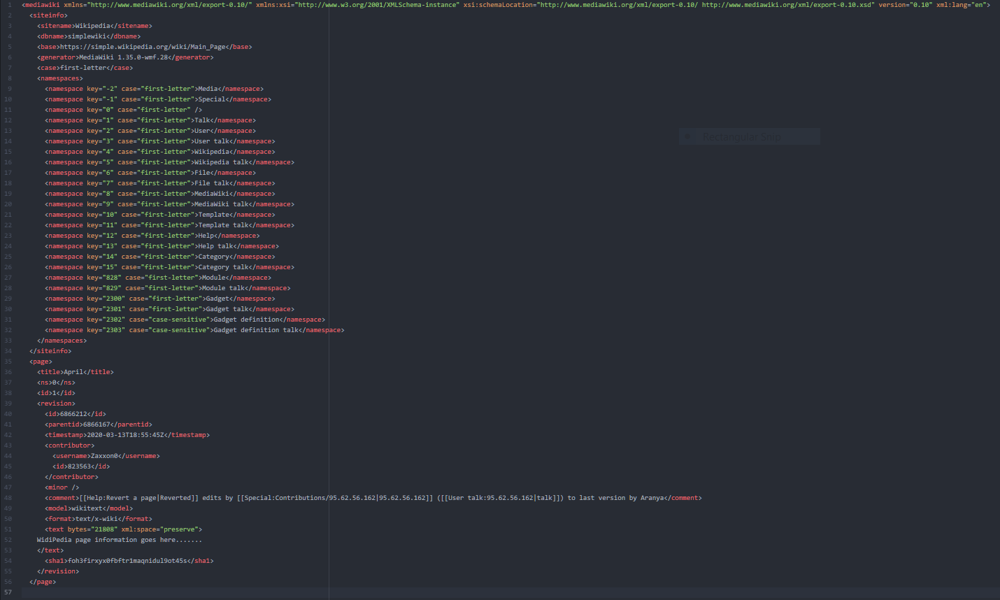
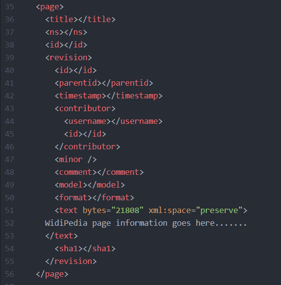
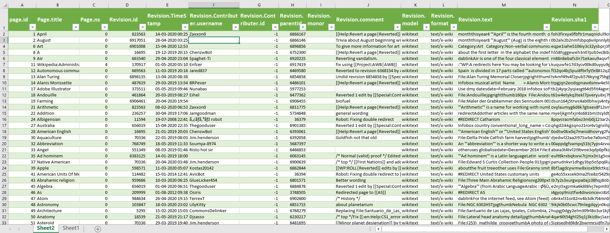

17. Reading and Saving WikiPedia Revision pages (XML) into CVS file using Python
-
-
Cover Page
17. Reading and Saving WikiPedia Revision pages (XML) into CVS file using Python
Date: 06-October-2020

-
Introduction
Wikipedia is a free online encyclopedia, created and edited by volunteers around the world and hosted by the Wikimedia Foundation.
Wikipedia offers free copies of all available content to interested users. These databases can be used for mirroring, personal use, informal backups, offline use or database queries (such as for Wikipedia:Maintenance).
All text content is multi-licensed under the Creative Commons Attribution-ShareAlike 3.0 License (CC-BY-SA) and the GNU Free Documentation License (GFDL). Images and other files are available under different terms, as detailed on their description pages. For our advice about complying with these licenses, see Wikipedia:Copyrights.
This topic explains how to extract data from WidiPedia revision pages into a CVS file.
The CVS file is a Coma Seperated Text file. WikiPedia Revision files are available as Zip files, for example; simplewiki-20200501-pages-articles-multistream.xml.bz2.
simplewiki-20200501-pages-articles-multistream.xml.bz2 file contains a Xml file simplewiki-20200501-pages-articles-multistream.xml
-
XML Structure of Wikipedia Revision file
Following is the sample structure of WikiPedia page in XML format.
In WikiPedia Every page information is saved as XML Tags. Following are the XML tag that are extracted into CVS file.

-
Structure of CVS file
The structure of CVS file generated is shown in image below

Following are the CVS files generated when Information from WikiPedia pages is extracted:
articles.csv
Page.id
Page.title
redirect.title
articles_redirect.csv
Page.id
Page.title
redirect.title
articles_template.csv
Page.id
Page.title
articles_text.csv
Page.id
Page.title
Page.ns
Revision.id
Revision.TimeStamp
Revision.Contributer.username
Revision.Contributer.id
Revision.parentid
Revision.monor
Revision.comment
Revision.model
Revision.format
Revision.text
Revision.sha1
-
Download and links
The python program to extract WikiPedia page information into CVS file is readWiki.py you can download it from here
see Wikipedia:Copyrights